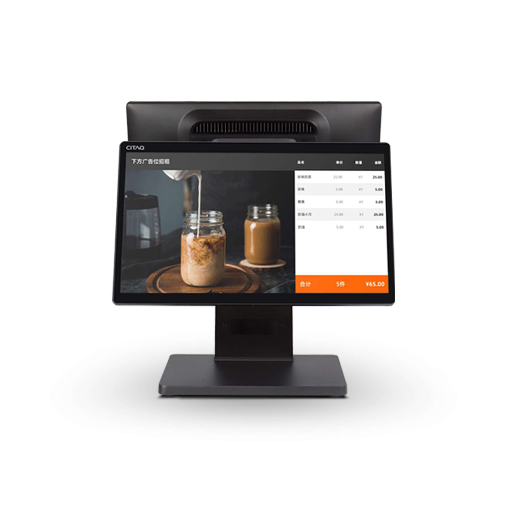
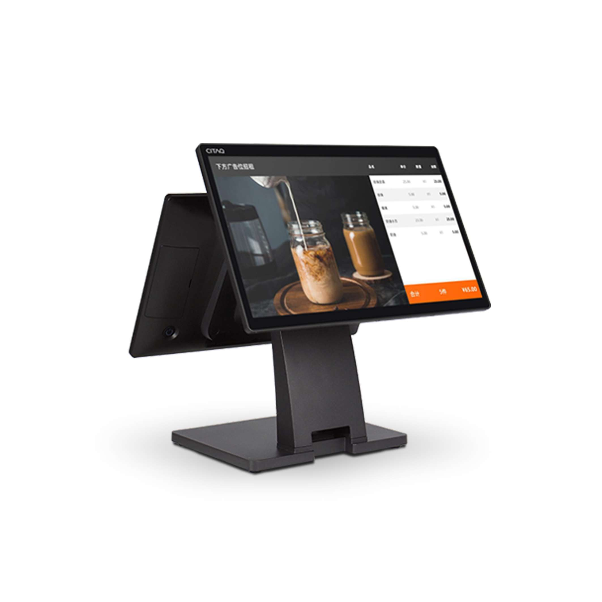
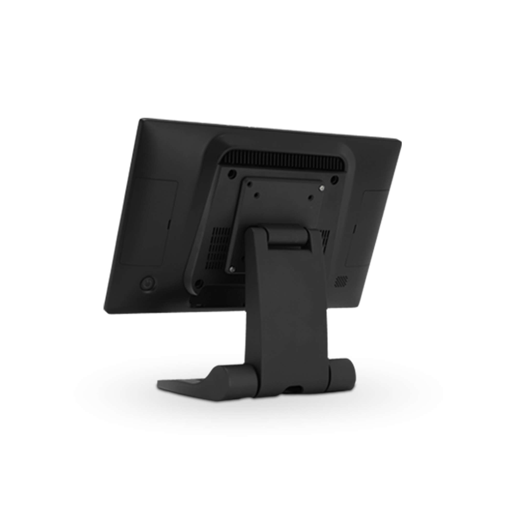
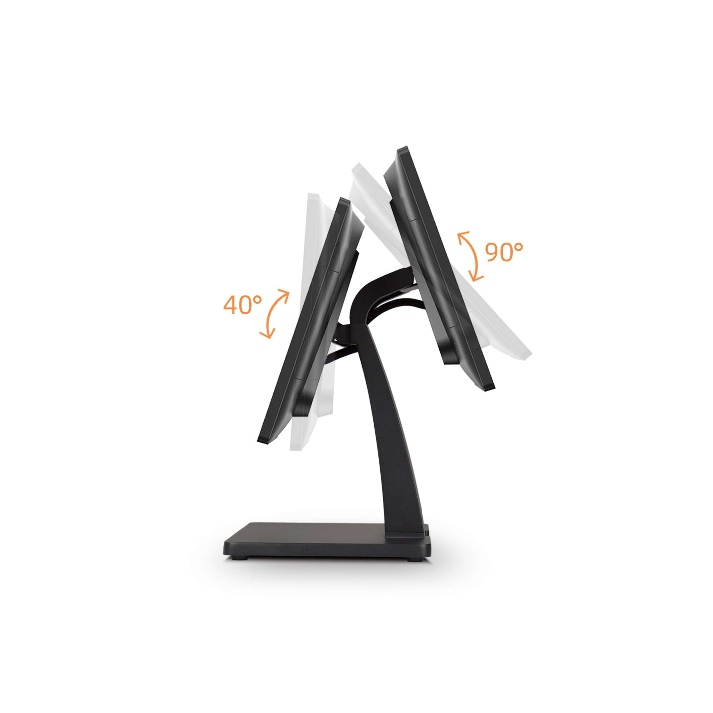
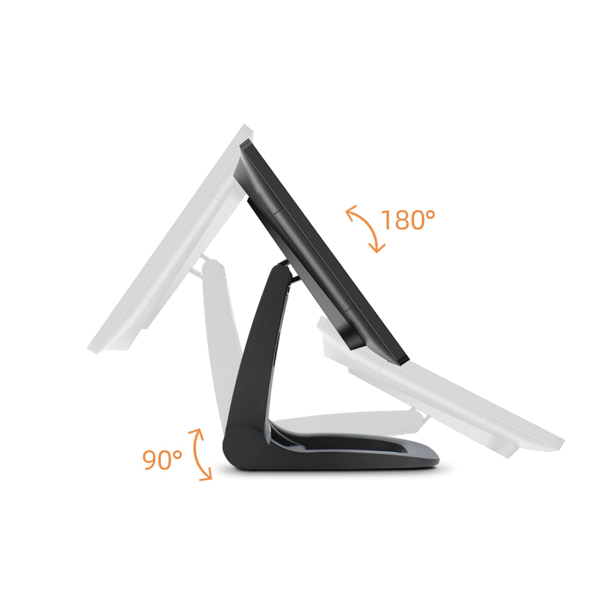

Contacto
- Bogotá, Colombia
Terminal POS ultradelgado de 15,6" con cuerpo de solo 30 mm de grosor





El K&T-T2w Lite redefine la eficiencia espacial en los puntos de venta modernos. Su cuerpo ultradelgado de 30 mm y su pantalla panorámica de 15,6" con bisel de apenas 7 mm proyectan una imagen premium en cualquier mostrador. El mecanismo de plegado flexible permite ajustar el ángulo de visualización entre 90° y 180°, adaptándose a vitrina, mostrador bajo y autoservicio. La configuración dual opcional agrega pantalla de cliente sin necesidad de accesorios adicionales.
El T2w Lite se adapta sin modificaciones físicas a diferentes espacios de atención mediante su mecanismo de plegado y la opción de segunda pantalla.
Disponible en versiones Windows y Android para adaptarse al software POS de cada negocio.
Para integración empresarial con ERP, facturación electrónica, software de gestión y periféricos corporativos. Actualizable a Windows 11.
Plataforma ágil para restaurantes, cafeterías y negocios con apps POS nativas. Mayor velocidad de arranque y menor costo de licencia.
Opción para proyectos con requerimientos de seguridad avanzada, código abierto o integración con sistemas de gestión propietarios.
El diseño ultradelgado de la serie T2 ocupa mínimo espacio en el mostrador y proyecta una imagen premium en cualquier tipo de negocio.
Cierre y apertura del panel principal entre 90° y 180° para adaptarse a diferentes alturas de mostrador, modos de autoservicio o exhibición en vitrina.
La segunda pantalla se integra en el mismo cuerpo sin cables externos ni soportes adicionales, manteniendo el perfil ultradelgado del equipo.
El marco ultraestrecho maximiza el área útil de la pantalla y ofrece una apariencia limpia y contemporánea que destaca en cualquier punto de venta.
Los puertos laterales permiten conectar impresoras térmicas, lectores de código, cajones de efectivo y datáfonos de forma sencilla.
Apto para retail, restaurantes, cafeterías, kioscos de autoservicio y mostradores de atención donde la imagen del negocio es prioritaria.
El T2w Lite incorpora procesadores Intel certificados para entornos comerciales, con versiones Windows y Android disponibles según el proyecto.
Los puertos laterales del T2w Lite cubren la conectividad completa de un punto de venta sin comprometer el diseño ultradelgado.
Acompañamos proyectos en Colombia, Centroamérica y El Caribe con enfoque consultivo y soporte especializado.
Podemos integrar el POS con turnos, cartelería digital, autogestión y operación omnicanal bajo una sola plataforma.
No solo entregamos hardware. Analizamos su operación y recomendamos la configuración adecuada para su sector.
Acompañamiento preventivo y correctivo según el alcance contratado, con equipo técnico especializado.
Diseño, configuración, integración y pruebas para despliegues corporativos con altos estándares de calidad.
Soluciones preparadas para crecer por sede, ciudad, país o región junto con su operación.
Solicite su cotización del K&T-T2w Lite y descubra cómo este terminal transforma la imagen y la eficiencia de su operación.